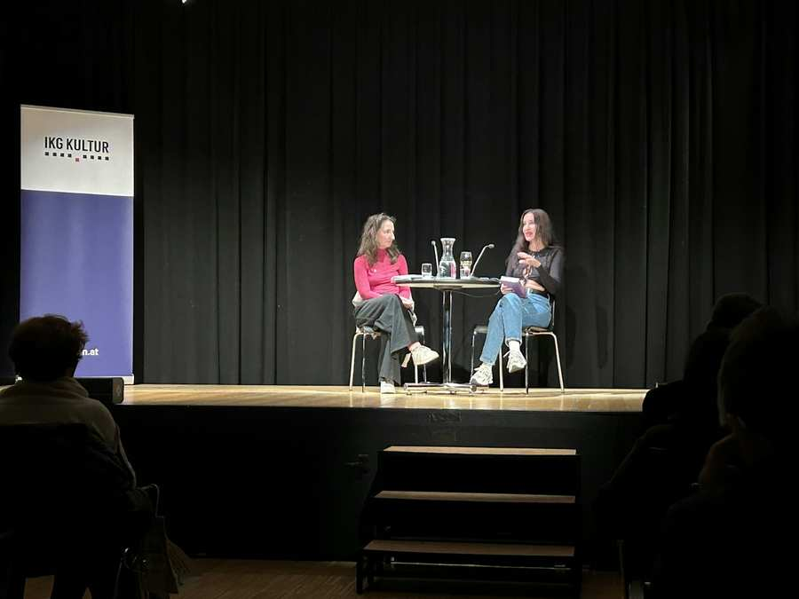

Am 10. September erlebte das Jüdische Neujahrskonzert seine zweite erfolgreiche Ausgabe im Wiener Konzerthaus. Mit einer hochkarätigen Darbietung aufstrebender Musikerinnen und Musiker gehörte die Bühne der Zukunft der klassischen Musik!
Das Konzert, das kurz vor Rosch Hashana, dem jüdischen Neujahrsfest, stattfand, bot den Besucherinnen und Besuchern eine großartige Gelegenheit, das reiche kulturelle Erbe der jüdischen Gemeinschaft zu feiern und sich von der Kraft der Musik mitreißen zu lassen.

Um der Zukunft eine Plattform zu geben, lud die Israelitische Kultusgemeinde Wien in diesem Jahr junge Ausnahmetalente des Israel Philharmonic auf die Bühne des Mozartsaals.
Den musikalischen Start in den Abend machte ein junges Streichquartett, bestehend aus den jüdisch-internationalen MusikerInnen Alina Boyarkina (Violine), Noam Yaffe (Violine), Erik Buchberger (Bratsche) und Ori Ron (Cello). Der vielfach prämierte und erst 23-jährige Pianist Tom Borrow bespielte die zweite Hälfte des Abends.
Die jüdische Gemeinde in Wien öffnete ihre Türen und lud alle interessierten Menschen ein, an diesem besonderen Abend teilzuhaben. Das Publikum, unabhängig von seinem kulturellen Hintergrund, fand sich zusammen, um gemeinsam die Musik und die Botschaft von Freiheit und Zusammengehörigkeit zu feiern.
Dieses nun alljährliche Ereignis ist neuer Fixpunkt im Wiener Kulturkalender. Wir sind jetzt schon gespannt auf das Programm im nächsten Jahr. Shana Tova!
Verwandte Inhalte
